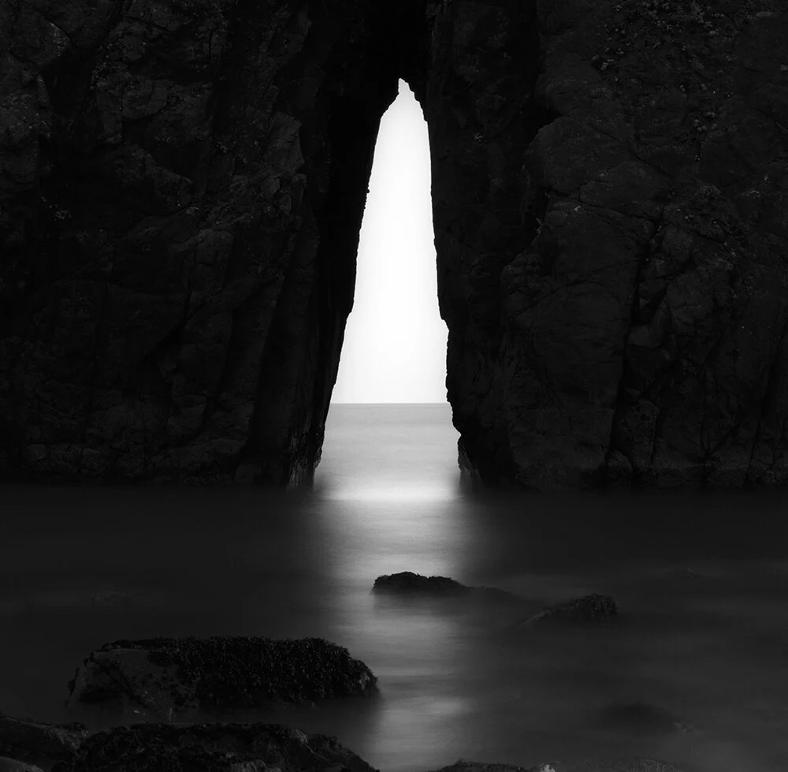

拍一张胶片多少钱？最省 1.6 元，最贵 5 元
今年聊胶片涨价的声音一直没停过。但吵来吵去，没人算最实际的那个数：拍一张，到底多少钱。
一、先把账摊开：最省 1.6 元，最贵 5 元
本站收录的 39 卷里，有 37 卷能查到 135 的参考价。按一卷 36 张折算每张，再加上冲扫行情（黑白送冲约 ¥20–30，精扫约 ¥30–80），四条典型路线的单张成本是这样：
| 路线 | 卷价（135） | 冲扫 | 每张成本 |
|---|---|---|---|
| Fomapan 100 / 200 | 约 ¥28–38 | 送冲 ¥25 | 约 ¥1.6 |
| Kentmere 100 / 400 | 约 ¥45–60 | 送冲 ¥25 | 约 ¥2.2 |
| Acros II | 约 ¥95–120 | 送冲 ¥25 | 约 ¥3.7 |
| StreetPan 400 / Pancro 400 | 约 ¥110–140 | 精扫 ¥55 | 约 ¥5.0 |
同样拍 36 张，最省和最贵差了 3 倍多。这两个数字不是估的，都来自本站自己的参考价——你可以点开每一卷的档案页对着看。
二、37 卷的单张成本，两头长这样
把 37 卷全算一遍，最省的一头几乎被 Foma 和 Ilford 的低价线圈占了；最贵的一头是两款特殊工艺的卷：
| 最省的 5 卷 | 135 参考价 | 每张 |
|---|---|---|
| Fomapan 100 | 约 ¥28–38 | ¥1.61 |
| Fomapan 200 | 约 ¥28–38 | ¥1.61 |
| Fomapan 400 | 约 ¥30–40 | ¥1.67 |
| Kentmere 100 | 约 ¥45–60 | ¥2.17 |
| Kentmere 400 | 约 ¥45–60 | ¥2.17 |
| 最贵的 3 卷 | 135 参考价 | 每张 |
|---|---|---|
| Acros II | 约 ¥95–120 | ¥3.69 |
| Pancro 400 | 约 ¥110–140 | ¥4.17 |
| StreetPan 400 | 约 ¥110–140 | ¥4.17 |
这里的算法是：卷价 ÷ 36，再加冲扫 ÷ 36。同一档冲扫下，卷价高出的那部分是实打实压不下去的——它跟你的技术、你的相机都没关系，纯粹是卷的定价。

三、反直觉的一条：省卷价，比省冲扫更管用
把两个变量分开算，结论有点反常识：
卷价这根杠杆，是冲扫的两倍。想省钱，先换卷，再换店。
但这条只讲成本，不讲画质。画质上扫描的影响大得多——本站《胶片拍完怎么冲？》里算过：同一卷底片换个地方扫，能差出一个滤镜的距离。两句不冲突：成本看卷，画质看店。
四、真正的大变量是画幅：同一卷 120，是 135 的 3.7 倍
上面全按 135 算。如果你拍 120，账会彻底变样——因为 120 一卷只有 12 张（6×6 画幅），而 135 是 36 张，光是张数就先差 3 倍。
| 同一款卷 | 135（36 张） | 120（6×6，12 张） | 倍数 |
|---|---|---|---|
| Fomapan 100 | ¥1.61 / 张 | ¥5.83 / 张 | 3.6× |
| Kentmere 400 | ¥2.17 / 张 | ¥7.92 / 张 | 3.7× |
| HP5 Plus | ¥2.92 / 张 | ¥10.67 / 张 | 3.7× |
| Acros II | ¥3.69 / 张 | ¥13.58 / 张 | 3.7× |
规律相当整齐：同一款卷换成 120，单张成本大约翻到 3.7 倍。所以「120 更贵」这句话得拆开看——卷价本身只贵了两成左右，真正贵的是张数少了三分之二。
这也解释了一种常见的省钱策略：135 拍量，120 拍片。平时练手全用 135，真要出片子才上 120。
而且 120 内部还能再分档——取决于你用哪个画幅后背。同一卷 120，张数是死的，画幅一变，单价就跟着变（按 Fomapan 100 的 120 参考价 ¥30–50、冲扫 ¥30 估算）：
| 120 画幅 | 一卷张数 | 每张成本 |
|---|---|---|
| 6×4.5 | 16 张 | 约 ¥4.4 |
| 6×6 | 12 张 | 约 ¥5.8 |
| 6×7 | 10 张 | 约 ¥7.0 |
| 6×9 | 8 张 | 约 ¥8.8 |
从 6×4.5 换到 6×9，单价直接翻倍，而你还是同一卷、同一家店。所以在 120 上，「用什么后背」这件事本身就是一笔钱：要张数就上 645，要画质和放大余量才上 6×9。
五、四个容易踩的坑

六、最省的三条路线
想把成本再压一档，只剩一条路：自己冲。本站《胶片拍完怎么冲？》里算过，黑白自冲的药水成本每卷不到十块钱。这么一算，Fomapan 的单张成本能从 1.6 元掉到 1.2 元左右。代价是买药水、控温、再加一个晚上。
七、一句话
胶片的钱不在快门里，在你买卷和冲扫的那两笔账上。
下面这几卷是本站最省的那一档，规格、使用感受、参考价和实拍样片都在。
最后交代一下数据口径：所有卷价都是本站整理的参考价（随市场波动，仅供比较），按 135 一卷 36 张、120 按标注张数折算；冲扫行情来自本站《胶片拍完怎么冲？》。两个数一除，就是你每按一次快门的实际成本。
本站最省的一档（135 参考价）
Fomapan 100（¥28–38） Fomapan 200（¥28–38） Fomapan 400（¥30–40） Kentmere 400（¥45–60）
去胶卷库看看这几卷
「胶卷档案」是一个可搜索的胶卷资料库：每卷都有规格、特性、使用感受、参考价与实拍样片。搜品牌或型号就能直达。